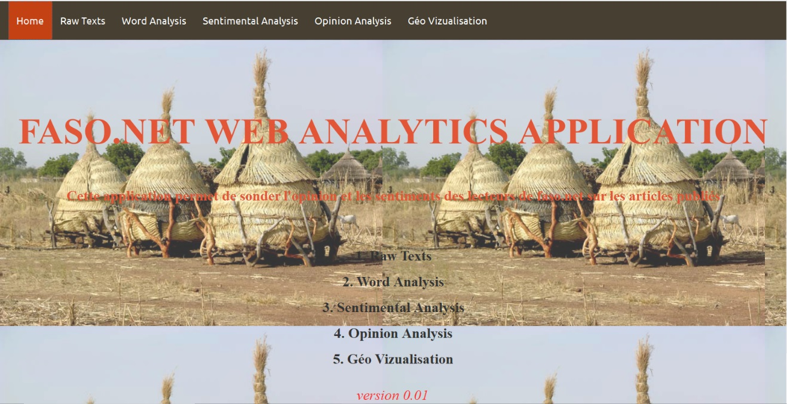

Qu'est ce que FASO.NET WEB ANALYTICS ?
Decouvrer notre application

Lefaso.net est un média en ligne burkinabé. Ce portail d’informations, lancé le 19 octobre 2003, a pour ambition de faire connaître le Burkina Faso autrement. Pour ce faire il dispose d'un réseau de correspondants journalistes dans la plupart des 13 régions du Burkina Faso ainsi que dans certains pays de la sous région. Et compte en moyenne plus de 100 000 lecteurs par jour Le FASO.NET WEB SONDAGE est une application web qui offret des services de sondage d'opinion. En s'appuyant sur des techniques de l'intelligence artificielle notament le text mining et le web scraping, nous développons un ensemble de traitements informatiques consistant à extraire des connaissances selon un critère de nouveauté ou de similarité dans des textes produits par les lecteurs de faso net Nous pouvons extraire l'opinion, le sentiment et la pensé d'un lecteurs ou l'ensembles des lecteurs sur les sujets publiers sur le site web, la page facebook et le compte twitter de faso net.
Licence
Licence sur les Données
Avec l'entrée en vigeur du RGPD(Règlement Général sur la Protection des Données), le web scraping constitue aujourd'hui une donne incontournable dans la stratégie des entreprises connectées. Au regard de la législation, la pratique du web scraping pose des difficultés, notamment au regard du droit pénal, droit de la concurrence et de la propriété intellectuelle. Cependant il faut noté que tous les sites web service/client procéde une licence utilisateur, qui montre les conditions d'utilisations du site, le consentement et les intérêts légitimes
Licence de l'application
L'application est à sa version Beta, donc peut être testé par toutes les personnes
PARAMETRES ET UTILISATIONS
Raw Texts
Il s'agit d'un ensemble de parametres permettant de définir les sources de commentaires (les pages facebook, twitter et du site web). ces parametres permettrent également de selectionner les commentaires à analyser, soit par titre des articles ou par mots clés. Par exemple: djihadisme
Word Analysis
La word analysis vous offfre des analyses au plus details dans les commentaires. Les mots les plus frequents, comment les mots se placent dans les commentaires et la prédiction de la suites de mots, phrases ou commentaire. Par exmeple: je suis ...(malade, fatigué, ...) l'algorithme peut vous le completé avec efficacité
Sentimental Analysis
Ces parametres permettent une analyse des sentiments contenues dans les commentaires selectionnés. Nous avons également un dégrés des 8 émotions primaires reconnues par la psychologie (Joie – tristesse - Sympathie – dégoût - Peur – colère - Surprise – excitation)
Opinion Analysis
Qui donne l'opinion contenu dans les commentaires analysés.